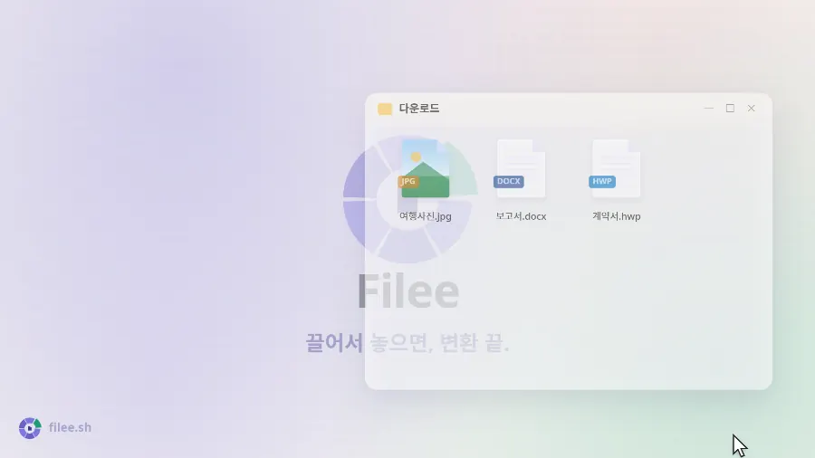
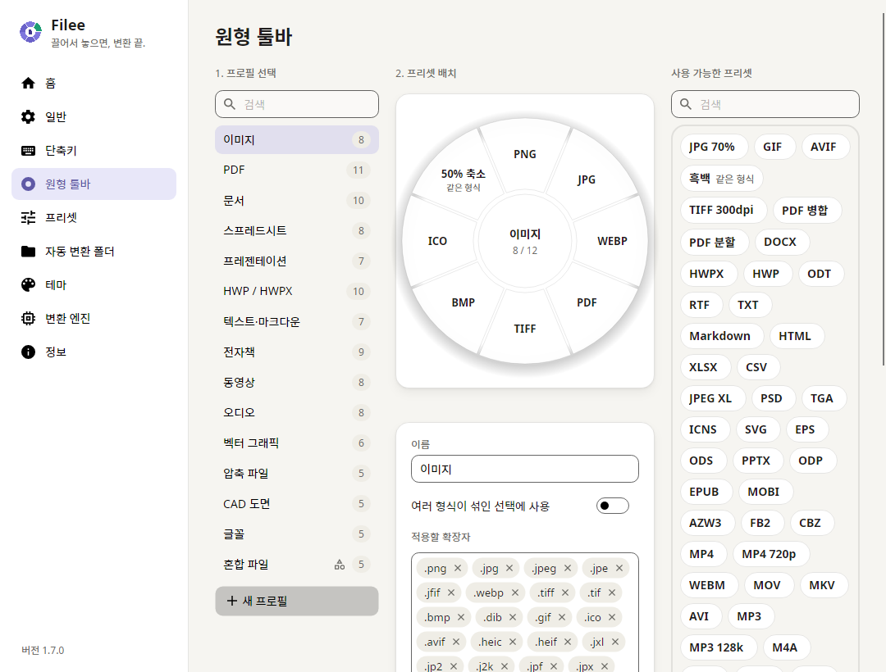
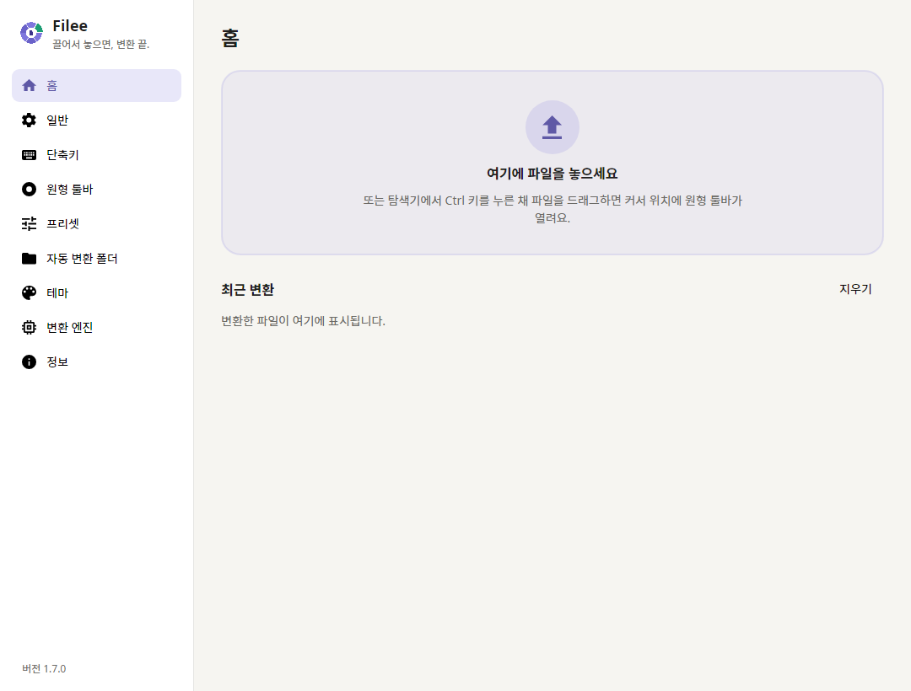

드래그로 쓰는 무료 오픈소스 파일 변환기.
키(Ctrl, macOS는 Option)를 누른 채 파일을 끌면 커서 위치에 도넛이 열려요.
원하는 형식 위에 놓으면 끝.
웹사이트 · 다운로드 · LinkedIn · 설치 · 명령줄 · 개발


English · Español · 日本語 · 한국어 · 简体中文 · 繁體中文 · Polski · हिन्दी · Русский · العربية · Português (Brasil) · Português (Portugal) · Français · ไทย
|
커서 바로 옆에서 앱 창을 열 필요가 없어요. 끌고 있는 파일에 맞는 형식만 지금 있는 자리에 나타나요. |
267가지 형식, 다른 프로그램 없이 이미지, PDF, 워드, 엑셀, 파워포인트, HWP, 전자책, 압축 파일, 글꼴, CAD, 3D 모델, 지리 정보 데이터를 오피스·한컴오피스·LibreOffice 없이 변환해요. |
내 컴퓨터 안에서만 아무것도 업로드하지 않아요. 오프라인으로 동작하고 결과는 원본 옆에 저장해요. |
이렇게 동작해요

27초 영상과 직접 해보는 데모는 filee.sh에서
설치
릴리스에서 내려받으세요.
- Windows 10/11:
Filee-<version>-win-Setup.exe를 실행하거나,win-Portable.zip을 풀고Filee.exe를 실행해요.- 설치 프로그램은 Filee가 직접 만든 것이라 Filee와 같은 언어로 안내하고, PC에 따로 설치할 것이 없어요.
- 설치할 때 탐색기 메뉴, 로그인 시 자동 실행,
filee명령, 추가 엔진을 고를 수 있어요. - 무인 설치에는 Inno Setup의 스위치(
/VERYSILENT /SUPPRESSMSGBOXES)를 그대로 쓸 수 있어요.
- macOS 13 이상 (미리보기):
osx-arm64또는osx-x64패키지를 풀고./install.sh를 실행해요.- 또는
.dmg를 열고 Filee를 응용 프로그램(Applications) 폴더로 끌어 놓아도 돼요(filee명령은install.sh로만 추가돼요). - 아직 공증 전이라, 처음 실행할 때 시스템 설정 → 개인정보 보호 및 보안 → 그래도 열기로 허용해 주세요.
- 또는
- Linux x64·ARM64 (Ubuntu 22.04 이상): 패키지를 풀고
./install.sh를 실행해요(root 불필요, Python 3 필요).- 드래그 제스처는 X11에서 돼요. Wayland에서는 드롭 영역과 파일 관리자 우클릭 메뉴를 써 주세요.
새 버전이 나오면 메뉴에 표시되고, 설정과 엔진은 그대로 둔 채 업데이트돼요. 업데이트한 뒤에는 새 기능을 슬라이드 몇 장으로 보여 줘요.
Windows: Filee가 실행되지 않나요(창도 오류도 없음)? 오랫동안 업데이트하지 않은 Windows 10을 하드웨어 적용 스택 보호(CET)를 지원하는 프로세서의 PC에서 쓰면 생기는 문제예요. Windows가 이 보호 기능을 켜지만 .NET에 필요한 기능이 빠져 있어서 Filee와 설치 프로그램이 바로 종료돼요.
- 권장: Windows 업데이트에서 받을 수 있는 업데이트(최신 누적 업데이트)를 설치하세요.
- 업데이트할 수 없다면: Filee에만 이 보호 기능을 끄면 대개 실행돼요. 관리자 권한 PowerShell에서 실행하세요.
Set-ProcessMitigation -Name Filee.exe -Disable UserShadowStack
Set-ProcessMitigation -Name filee-cli.exe -Disable UserShadowStack
설치 프로그램은 파일 이름(예: Filee-<version>-win-Setup.exe)으로 같은 명령을 실행하거나, 위 두 줄만 있으면 되는 포터블 ZIP을 쓰세요.
되돌리려면 Windows 보안 → 앱 및 브라우저 컨트롤 → Exploit Protection 설정 → 프로그램 설정에서 해당 항목을 지우세요.
기능
- 커서 옆 도넛: 키를 누른 채 파일을 끌어 형식 위에 놓으면 끝. 파일에 맞는 형식만 나와요.
- 브라우저에서 바로: Chrome, Edge, Firefox, Safari의 이미지, 파일 링크, 다운로드도 똑같이 끌어 놓으면 돼요.
- 다운로드 폴더에 저장하고(변환된 파일만 남길 수도 있어요) 변환해요.
- 링크는 브라우저 로그인 없이 내려받아요.
- 파일 종류마다 툴바를 드래그로 배치하고, 다음을 프리셋으로 정해요:
- 품질·크기·DPI
- PDF 페이지와 압축
- 동영상·오디오
- 저장 위치·파일 이름
- 도넛 뒷면: 도넛이 열려 있을 때 Tab을 누르거나 마우스 휠을 돌리면 뒤집혀서 덜 쓰는 형식과 도구가 나와요.
- 변환하기 전에 자르기: 자르기 조각을 고르면 그림이 한 장씩 열려요. 틀을 끌고 비율을 고르면 그 부분만 저장해요.
- 여러 파일을 한 번에 병렬로 변환해요. 여러 단계가 필요한 변환(HWP → HWPX → DOCX)도 알아서 찾아요.
- 자동 변환 폴더에 들어온 파일을 바로 변환해요.
- 최근 변환: 홈에서 결과를 썸네일과 함께 보여 주고, 바로 열거나 연결 프로그램으로 열 수 있어요.
- 다른 방법: 우클릭 메뉴, 키보드 단축키, 드롭 영역,
filee명령 - 밝은·어두운 테마, 원하는 강조색과 원형 툴바 불투명도, English · Español · 日本語 · 한국어 · 简体中文 · 繁體中文 · Polski · हिन्दी · Русский · العربية(오른쪽에서 왼쪽으로) · Português (Brasil) · Français · नेपाली · ไทย · Türkçe · Português (Portugal) · Deutsch
스크린샷
 |
 |
| 파일 종류마다 도넛을 드래그 앤 드롭으로 배치 | 홈: 드롭 영역과 최근 변환 기록 |
지원 형식
| 원본 | 변환 대상 |
|---|---|
| 이미지: JPG, PNG, WEBP, AVIF, TIFF, BMP, GIF, APNG, ICO, ICNS, JPEG XL, JPEG 2000, PSD/PSB, TGA, PPM, HEIC, QOI, DDS, PCX, MNG, CUR 등; GIMP XCF, 카메라 RAW(CR2, CR3, NEF, ARW, DNG 등), DICOM, OpenEXR, HDR, FITS, JPEG XR(Windows), 아이폰 라이브 포토(LIVP)는 읽기 |
위 형식끼리(HEIC⁵), PDF, SVG(벡터화), 크기 조정, 흑백; 라이브/모션 포토(아이폰, 안드로이드) → 그 동영상(MP4, MOV⁵), 동영상 → 라이브 포토(아이폰)·모션 포토(안드로이드)⁵(실험 기능) |
| 벡터: SVG, SVGZ, EMF, WMF, AI EPS, PS¹ CDR, VSD, CGM, ODG, FODG² |
PDF(벡터), PNG 등 이미지, SVG ↔ SVGZ, SVG → DXF/DWG, PDF → EPS/PS¹, SVG → EMF, WMF, ODG² |
| DOCX, HWPX, TXT, PNG, JPG, TIFF, CBZ, PPTX(페이지마다 그림 한 장), SVG²; 합치기(순서를 먼저 고르기), 나누기, 페이지 범위, 압축 (더 작은 PDF) |
|
| 문서: DOCX, DOCM, DOTX, EML, Outlook MSG; OFD(중국 전자세금계산서·공문서)는 읽기 DOC, ODT, FODT, OTT, RTF, WPS, WPD, Pages, ClarisWorks, MacWrite, T602 등² |
PDF, DOCX, HWPX, EPUB, TXT, HTML; MSG → EML ODT, FODT, OTT² |
| 스프레드시트: XLSX, XLSM, XLS, XLT, ODS, CSV, TSV OTS, FODS, Numbers, ET² |
PDF, XLSX, ODS, CSV, TSV, JSON, HWPX, HTML XLT, OTS² |
| 프레젠테이션: PPTX, PPTM, POTX, POTM, PPSX PPT, ODP, OTP, FODP, Keynote² |
PDF, PNG, JPG, DOCX, HWPX OTP² |
| 한글: HWP, HWPX | PDF, PNG, DOCX, HWPX ↔ HWP, TXT, 마크다운, HTML |
| 텍스트: TXT, LOG, 스크립트 소스(PY, PAC, BAT, COMMAND; 실행하지 않고 읽기만), 마크다운, HTML; MHTML(저장한 웹 페이지)은 읽기 reStructuredText, LaTeX, Org, AsciiDoc, Typst, MediaWiki, DocBook, Jupyter, Textile, man, OPML³ |
UTF-8 TXT, PDF, DOCX, HWPX, EPUB 서로 변환, PPTX 슬라이드³ |
| 전자책: EPUB, KEPUB, MOBI, AZW3, AZW, AZW4, FB2, CBZ, CBR, CB7, HTMLZ, TXTZ LIT, LRF, CHM, PDB 등⁴ |
PDF, EPUB, KEPUB(코보), DOCX, TXT, HTML, HWPX MOBI, AZW3⁴ |
| 동영상⁵: MP4, MOV, MKV, WEBM, AVI, WMV, FLV, MPEG, 비디오 CD(DAT), TS, M2TS, 3GP, OGV, VOB 등 | MP4(H.264, HEVC, AV1), WEBM, MOV, MKV, AVI, GIF, APNG, MP3, M4A, 720p, 자막(SRT, ASS, WebVTT) |
| 오디오⁵: MP3, M4A, AAC, WAV, FLAC, OGG, OPUS, WMA, AIFF, AMR, APE, WavPack, TTA, DSD(DSF, DFF), DTS, AC3, E-AC3 등 | MP3, M4A(AAC, ALAC), WAV, FLAC, OGG, OPUS, AAC, WavPack, TTA, W64, AC3, E-AC3 |
| 자막: SRT, ASS/SSA, WebVTT, SAMI(SMI), LRC, TTML, MicroDVD, SCC | 서로 변환, UTF-8로 저장(CP949 한글 자막도 깨지지 않아요) |
| 압축 파일: ZIP, ANSYS Workbench(WBPZ), 7Z, RAR, TAR, TAR.GZ, TAR.BZ2, TAR.XZ, GZ, ISO, CAB, DMG, ALZ, EGG 등 | 압축 풀기, ZIP, 7Z, TAR, TAR.GZ; 여러 파일 → ZIP 하나 |
| CAD: DWG, DXF | PDF, SVG, PNG, DWG ↔ DXF |
| 글꼴: TTF, OTF, WOFF, WOFF2, EOT; FON(Windows 비트맵 글꼴)은 읽기 |
서로 변환; FON → 크기마다 글꼴 하나 |
| 데이터: JSON, JSON Lines, YAML, TOML, XML vCard, iCalendar |
서로 변환, CSV·XLSX(표 모양 데이터); vCard, iCalendar ↔ CSV |
| 3D 모델: GLB, glTF, STL, OBJ (+ MTL), 3MF, PLY; FBX는 읽기 |
서로 변환, PNG 미리보기 |
| 지리 정보(벡터): Shapefile, GeoJSON, KML, KMZ, GPX 좌표가 있는 CSV; Garmin FIT는 읽기 |
서로 변환, CSV·XLSX·JSON; 투영 좌표계(UTM, 웹 메르카토르, 람베르트, 알버스)는 WGS 84 경위도로 변환 |
표시가 없는 형식은 오피스·한컴오피스·LibreOffice 없이 바로 변환돼요. 표시가 있는 형식은 추가 엔진이 필요하고, 필요할 때만 내려받아요: ¹ Ghostscript, ² LibreOffice, ³ Pandoc, ⁴ calibre, ⁵ FFmpeg (자세히).
명령줄
filee 명령은 앱과 같은 엔진과 프리셋을 써요(설치 프로그램이나 install.sh가 추가해요).
filee convert photo.heic --to jpg
filee convert *.png --to webp --quality 80 -o converted
filee watch D:\Inbox --to pdf --move-originals
모든 명령과 옵션은 filee.sh/ko/cli나 filee help에서 볼 수 있어요.
개발
Windows, macOS, Linux에서 .NET 10 SDK로 빌드해요.
git clone https://github.com/KnifeLemon/Filee.git
cd Filee
pwsh build/fetch-engines.ps1 -Only rhwp,pandoc # optional engines
dotnet run --project src/Filee.App
dotnet test
구조 · 엔진 · 변환기 추가 · 언어 추가 · 기여 안내
PR 환영해요. Filee가 쓸만하다면 ⭐ 하나가 다른 사람들이 Filee를 찾는 데 도움이 돼요.
코드 서명 정책
Filee는 Myeonggu Kim(KnifeLemon)이 개발하고 배포해요.
- Windows 릴리스는 Myeonggu Kim 명의의 Certum 오픈소스 코드 서명 인증서로 서명해요.
- 2.0.0까지의 릴리스는 서명되지 않았어요.
자세한 정책과 개인정보 처리 방침은 영문 README에 있어요. Filee는 파일을 업로드하지 않고, 사용 기록도 보내지 않아요.
후원하기
Filee는 앞으로도 무료예요. 개발을 응원하고 싶다면 편한 방법으로 후원해 주세요. 국내 카드·간편결제는 Fairy에서 할 수 있어요.
여기에 이름이나 로고를 올려 보세요. 매월 후원하시면 이곳에 이름을, 로고 티어는 이곳과 Filee 정보 페이지에 로고를 올려 드려요. 한 번 후원하신 분도 원하시면 이름을 올려 드려요.
라이선스
MIT, © 2026 Myeonggu Kim (KnifeLemon), Filee 기여자. 포함된 서드파티 구성요소는 각자의 라이선스를 따르고, THIRD-PARTY-NOTICES.md에 정리되어 있어요.